1.4.1 Создание фона для web-документов
Пример 1. Создать фон, используя свою кисть.
1. Запустите графический редактор GIMP и создайте новый документ, для чего выберите команду Файл -> Создать и задайте следующие параметры:
размер - 27x27 пикселов,
разрешение - 72 пиксела на дюйм, RGB цвет,
фон - прозрачный.
2. Для создания своей кисти в форме цветка с пятью лепестками выберите инструмент Овальное выделение.
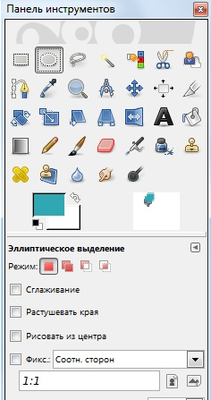
Рисунок 1
Выделите овал в окне рисунка, затем выберите синий цвет и залейте выделение. Выберите команду Инструменты\Преобразование\Вращение и поверните его, как показано на рисунке.
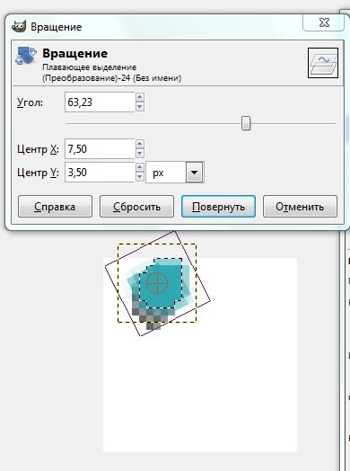
Рисунок 2
Запомните лепесток в буфере обмена. Из буфера обмена вставьте его в окно рисунка и, выбрав команду Инструменты\Преобразование\Вращение создайте еще один лепесток, как показано на рисунке.
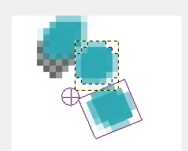
Рисунок 3
Повторив эти операции, создайте еще лепестки, чтобы получилось изображение, показанное на рисунке.
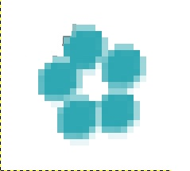
Рисунок 4
3. Выбрав в меню Файл команду Сохранить как\Кисть GIMP введите имя кисти, например fl_1.
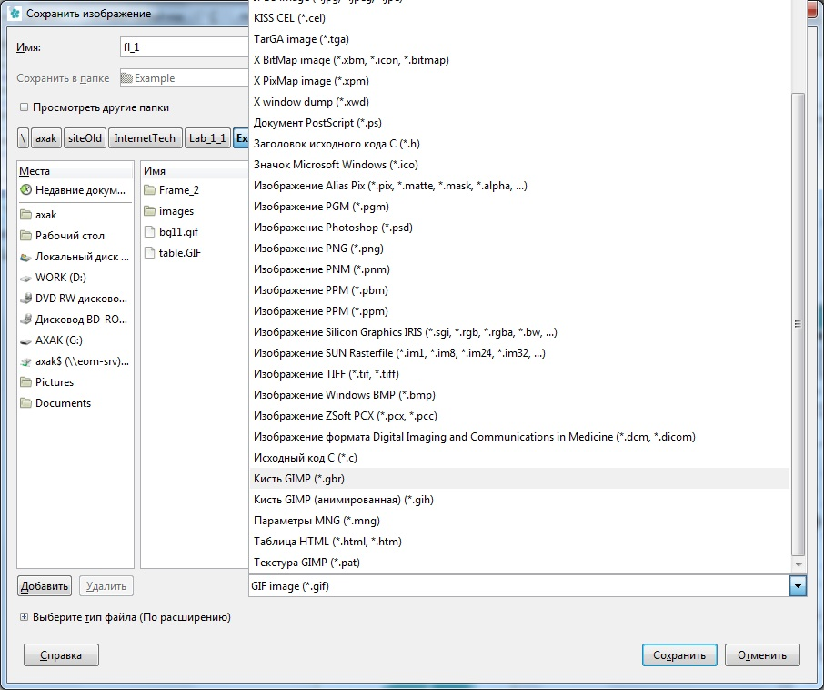
Рисунок 5
Созданная вами кисть занесена в набор кистей.
4. Закройте окно рисунка, в котором вы создавали кисть, и создайте новый документ размером 3x3 см, разрешением 72 пиксела на дюйм, RGB-цвет.
5. Выбрав на панели инструментов кисть, раскройте на панели свойств инструмента в поле Кисть список кистей и выберите созданную вами кисть-цветок.
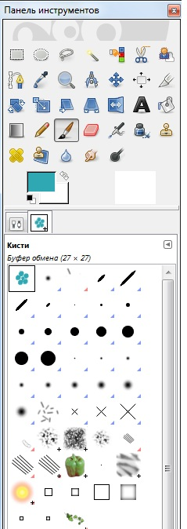
Рисунок 6
Выбирая различные цвета и щелкая кистью в окне рисунка, нарисуйте узор фона
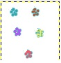
Рисунок 7
Сохраните созданный рисунок в формате GIF под именем bg2.gif.
7. Отредактируйте тег тела документа, указав фон: <BODY BACKGROUND=bg2.gif>
Сохраните web-документ и запустите web-обозреватель.
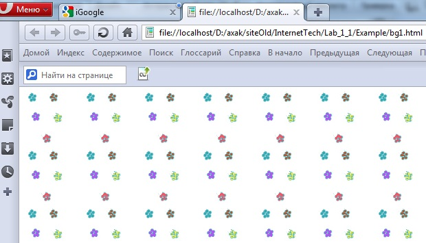
Рисунок 8
Пример 2.Создать фон для web-страницы, используя текст.
1. Загрузите редакторGIMP и создайте новый документ со следующими параметрами: размер - 5x5 см, разрешение - 72 пиксела на дюйм, RGB-цвет, фон - прозрачный.
2. Выбрав инструмент Текст, на панели свойств инструмента задайте параметры: шрифт, цвет, размер и начертание символов.
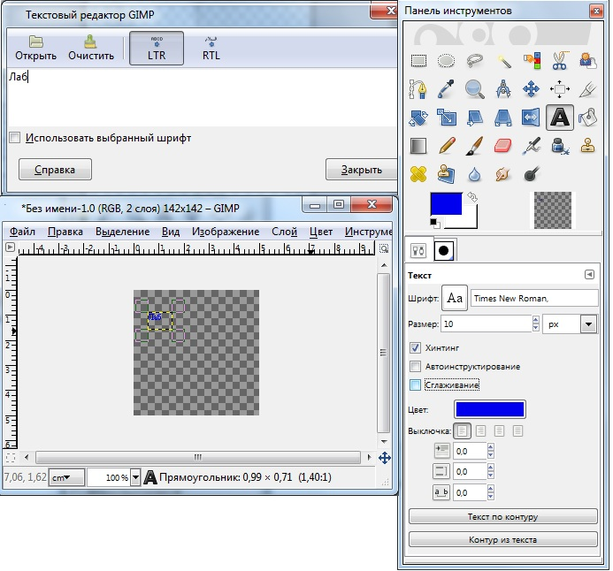
Рисунок 9
Указав место ввода текста в окне рисунка, введите текст.
3. Щелкните на тексте инструментом Вращение, и задайте положение введенного текста.
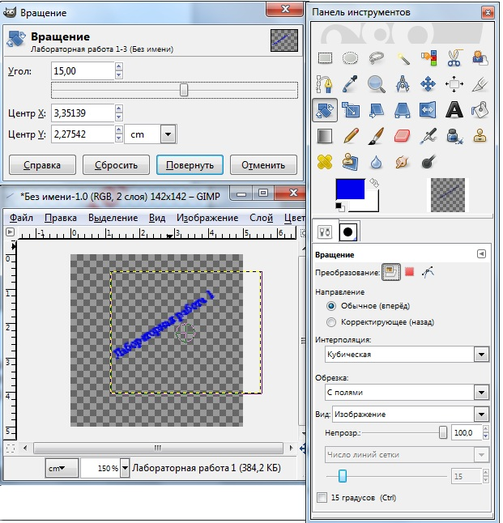
Рисунок 10
4. Сохраните созданный рисунок в формате GIF под именем bg3.gif.
5. В HTML-файле поставьте в теге описания фона ссылку на файл bg3.gif. Сохраните файл и просмотрите вид фона на web-странице в web-обозревателе.
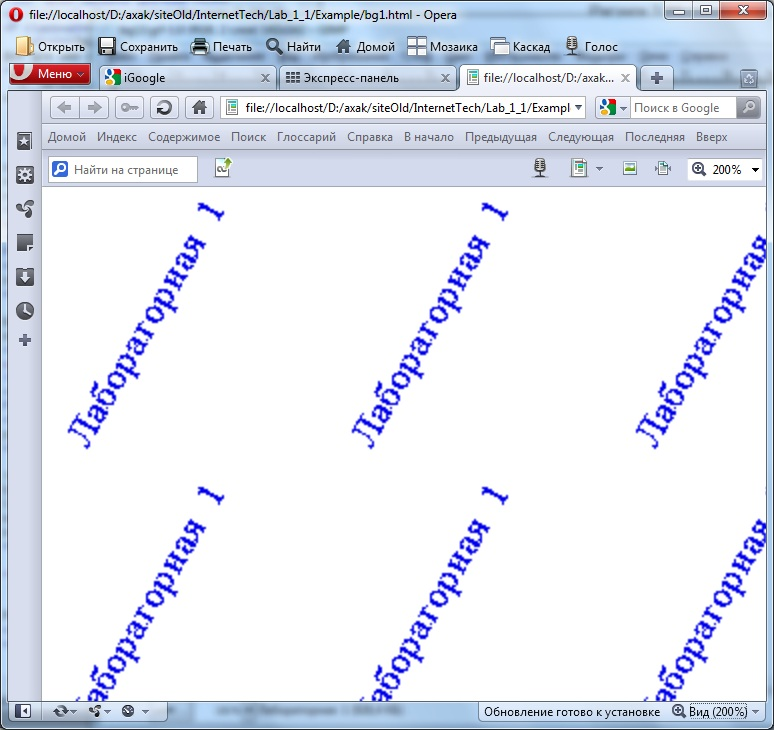
Рисунок 11